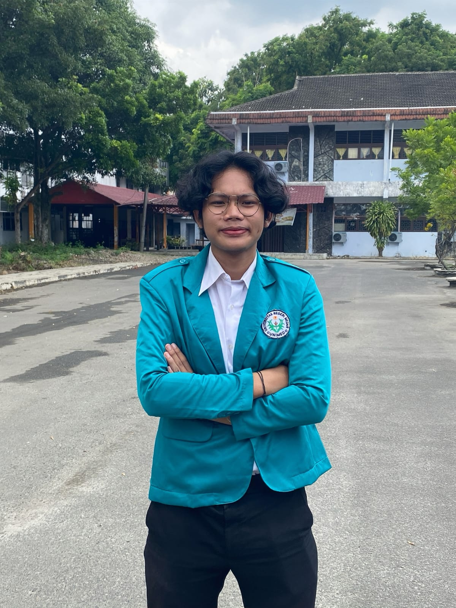

Mahasiswa yang memiliki ketertarikan pada teknologi, pengembangan website, organisasi, serta pengembangan kemampuan diri.
Lihat Profil
Saya adalah mahasiswa yang aktif dalam kegiatan akademik maupun organisasi. Saya memiliki minat dalam bidang teknologi informasi dan pengembangan website.
Terus meningkatkan kemampuan dalam bidang teknologi, bekerja secara profesional, serta memperoleh pengalaman melalui berbagai kegiatan dan proyek.
Program Studi Ilmu Komputer
Teknik Komputer dan Jaringan
Koordinator Perlengkapan — PKKMB Matematika FMIPA Unimed 2026. Memimpin tim perlengkapan, mengelola kebutuhan logistik, serta mengoordinasikan pengadaan, distribusi, dan pengembalian perlengkapan.
Terlibat dalam kepanitiaan Matematika Fair, Natal, dan Dies Natalis IKBKM sebagai anggota bidang acara dan perlengkapan.
Website portfolio pribadi menggunakan HTML dan CSS.
Perancangan sistem informasi untuk membantu pengelolaan data.
Proyek yang dibuat untuk memenuhi kebutuhan tugas dan pembelajaran akademik.
Jangan ragu untuk menghubungi saya untuk berdiskusi atau bekerja sama.